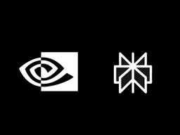
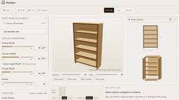

直近1週間の人気フィード
はてブ3件以上・直近7日（Discover RSSと同内容）

Local LLMを部署内に提供！ Local LLM Model as a Serviceとその取り組みについて 120
120 NTT docomo Business Engineers' Blog
NTT docomo Business Engineers' Blog
はてブ120件
こんにちは、イノベーションセンターの福田です。 普段はAIエージェントの検証や開発と、チーム内資産のDevOpsに取り組んでいます。 コーディングエージェントの普及によって、LLMは日々の開発で欠かせない道具となりました。 その多くはクラウド型のサービスを通じて利用されており、高性能なモデルをすぐに使える環境が整っています。 同時に、日々の開発で常用するものだからこそ、扱うデータや利用の実態を自組織の内側に収めておきたい場面も出てきます。 そのため、クラウド型のサービスを活用しつつ、自組織で動かす選択肢も併せ持っておくことには意味があります。 自組織の管理下にあるGPUでモデルを動かせば、デー…
1日前

越境を可能にする、人とAIのためのデザインシステム 57 Findy Tech Blog
Findy Tech Blog
はてブ57件
こんにちは！CTO室でエンジニアをやっている別府(@_nuk00_)です！ 今回の記事では、AIがデザイン案を自動で作成する時代に、なぜ管理コストのかかるデザインシステムを作ったのか。その理由と、デザインシステムの中身を紹介します。 記事は前編と後編の2つに分けています。 前編にあたるこの記事では、土台となる「人とAIが協働するデザインシステムの作り方」を紹介します。 後編では、その土台の上でモック作成やレビューをAIに任せて、業務がどのように変わったのかをお伝えします。 PO・デザイナー・エンジニアが役割を越えてUIを作っているチームの方に、特に読んでもらいたい内容です。 AIで、専門外の人…
2日前

ローカルでAIを動かして元を取るまで何年かかるかがわかる「Sunk Cost」、例えばメモリ64GBのMac Studioではどれだけの時間が必要なのか？ 29 GIGAZINE
GIGAZINE
はてブ29件
PCの購入費用やAIの利用量などを基に、ローカルでAIを動かした場合に何年で元が取れるかを試算できるサイト「Sunk Cost」が公開されています。費用だけでなく、そのPCに収まるAIモデルや生成速度、クラウドモデルとの能力比較もまとめて確認できます。
5時間前

自ら、問いに向かい合うことの有難さについて 25 ニューロサイエンスとマーケティングの間 - Between Neuroscience and Marketing
ニューロサイエンスとマーケティングの間 - Between Neuroscience and Marketing
必読 · 安宅和人
1.4/50 Summilux, Leica M (typ240), RAW Wakayama-castle, Japan (2017) 先日、ナビエ・ストークス方程式をめぐる数学の超難問について、OpenAIが解決したとする発表を行った。9月8日のことだ。使われたのは、GPT-6 Astraを大きく上回るという開発中の内部モデルと、それを動かす約1万のAIエージェントだ。Navier–Stokesだけで約270万回のメッセージをやり取りし、約1300億output tokenを生成したという。最初のエージェントを走らせてから約88時間後、AIは解に到達した。9月1日に着手し、6日にはLean…
2日前

「Perplexity」のローカルAIエージェント「Portable Computer」がWindowsでも利用可能に、VRAM 24GB以上のNVIDIA RTX GPUで／ローカル完結する処理ならクレジット不要 8窓の杜
はてブ8件
米NVIDIAは9月14日（現地時間）、米Perplexityの「Portable Computer」が「NVIDIA RTX」GPUを搭載したWindows PCで利用可能になったと発表した。「Portable Computer」は「Perplexity Computer」のローカル版にあたるAIエージェント。これまでは「NVIDIA DGX Spark」やLinuxを搭載したRTX PCでしか利用できなかった。
11時間前

本棚や机といったDIY家具の「設計」「材料一覧確認」「作り方確認」まで実行できるウェブアプリ「ShopSpec」 6 GIGAZINE
はてブ6件
「ShopSpec」は本棚や机の設計から組み立て手順解説まで担ってくれるDIYお助けアプリです。表記は英語で寸法もインチで示されていますが、スライダーを動かして家具を設計しているだけでも楽しいアプリに仕上がっています。
6時間前

AIに12機能を書かせたら、レビューに5営業日かかった 41 RAKUS Developers Blog | ラクス エンジニアブログ
RAKUS Developers Blog | ラクス エンジニアブログ
はてブ41件
前提：楽楽明細とは別のアプリとして作った 起きたこと：12機能を1本のプルリクにまとめた 原因：4層の名前までしか決めていなかった 対策：機械に判定させる範囲を広げ、人が見る範囲を絞る 実例：レビューで通せなかった箇所 次にやるなら：プルリクの切り方から変える チェックリスト：着手前に決めておく項目 編集後記：インタビューを終えて ラクス技術広報です。 開発本部では、各部署のAI活用の取り組みを技術広報がインタビューし、記事にしています。今回は電子請求書発行システム「楽楽明細」の新しいオプション機能を、AIにほぼ実装させて約2か月でリリースした事例です。 本記事は、AIを使って順調に機能開発が…
4日前

速報: Rails 8.1.3.1アプリをRuby 4.0.7にアップデートしたらJSONデコードでエラー 3 TechRacho
TechRacho
はてブ3件
はてブ3件 現象 https://techracho.bpsinc.jp/hachi8833/2026_09_15/159
8時間前

セガの技術本部とは？“技術で支える”ってこういうことなんだな、の話 4 SEGA TECH Blog
はてブ4件
こんにちは。セガCTOの矢儀です。私はセガ・アトラスをはじめとしたセガグループの技術相談を受けるお仕事や、対外的な技術の窓口をしています。今回は私の所属するセガの技術本部を紹介します。
2日前